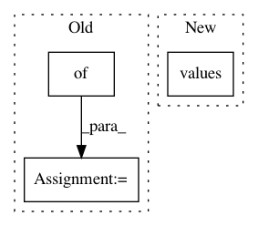

a1a430fa42fa58cb3ba9d93f44749319928b78c8,dirty_cat/string_distances.py,,ngram_similarity,#,90
Before Change
n-gram similarity between two strings
ngrams1 = get_ngrams(string1, n)
count_dict1 = {}
for ngram in ngrams1:
count_dict1.setdefault(ngram, 0)
count_dict1[ngram] += 1
After Change
ngrams2 = get_ngrams(string2, n)
count2 = Counter(ngrams2)
samegrams = sum((count1 & count2).values())
allgrams = len(ngrams1) + len(ngrams2)
similarity = samegrams/(allgrams - samegrams)
return similarity
In pattern: SUPERPATTERN
Frequency: 3
Non-data size: 3
Instances
Project Name: dirty-cat/dirty_cat
Commit Name: a1a430fa42fa58cb3ba9d93f44749319928b78c8
Time: 2018-03-14
Author: patricio.cerda@inria.fr
File Name: dirty_cat/string_distances.py
Class Name:
Method Name: ngram_similarity
Project Name: OpenNMT/OpenNMT-tf
Commit Name: 997875ab4734f08b153db53f4f3e546a7740a233
Time: 2020-11-04
Author: guillaumekln@users.noreply.github.com
File Name: opennmt/utils/misc.py
Class Name:
Method Name: get_variables_name_mapping
Project Name: jbms/beancount-import
Commit Name: e4d313478124e00a931ec40ab25643accad88641
Time: 2020-08-06
Author: dumbpyx@gmail.com
File Name: beancount_import/source/generic_importer_source.py
Class Name: ImporterSource
Method Name: prepare